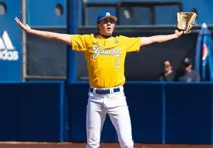

Jackson Flora represents UC Santa Barbara in collegiate baseball as a right-handed pitcher, contributing to the Gauchos’ overall pitching strategy and team performance. His continued development, game experience, and potential contributions to professional baseball make him a notable participant in NCAA Division I baseball. For the most current statistics and achievements, checking UCSB Gauchos official athletics sources or collegiate baseball statistics databases is recommended.
